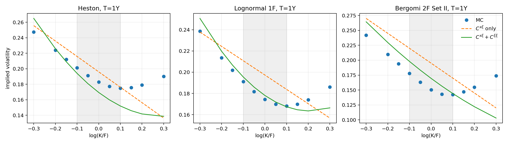
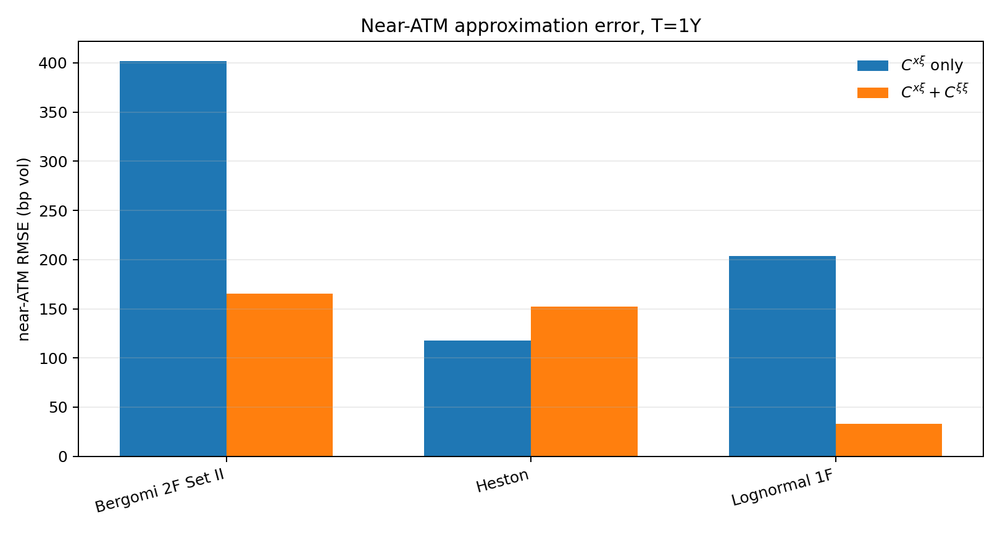
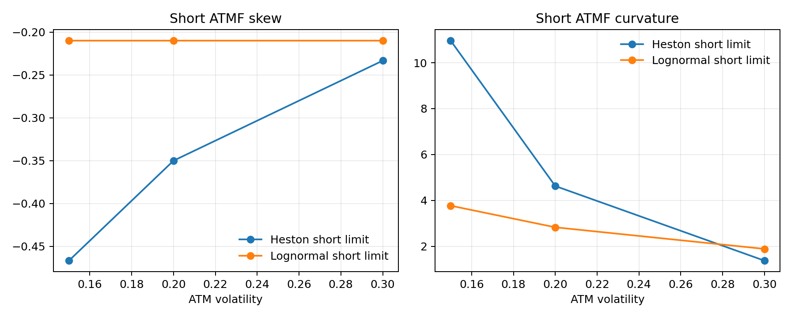
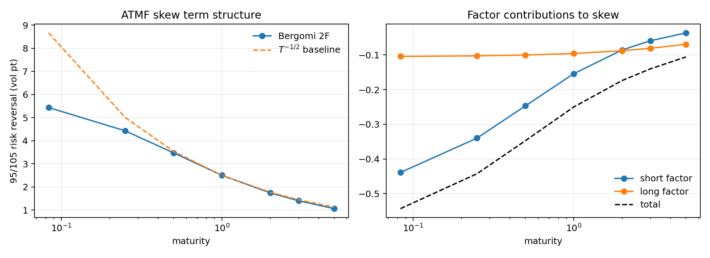
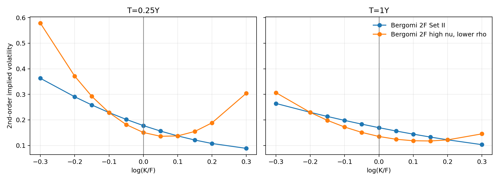

随机波动率微笑微扰近似与 ATMF 指标实验报告
摘要
本实验围绕 Bergomi 对随机波动率微笑的微扰展开公式，研究随机波动率模型如何把前向方差动态转化为近平值隐含波动率曲面。实验先用解析公式计算 、 与隐含波动率二次近似，再用轻量 Monte Carlo 生成 Heston、对数正态单因子和 Bergomi 双因子的欧式期权曲面作为参照。
数值结果支持三点结论。第一，ATMF skew 主要由 控制，只保留 的公式已经能给出接近 Monte Carlo 的 skew 方向与量级。第二，加入 后，解析曲面从接近直线的偏斜曲线变为“负 skew + 正 curvature”的常见权益微笑形态。第三，Heston 的短期 skew 与当前波动率水平绑定，而对数正态前向方差模型的短期 skew 与当前波动率水平脱钩；双因子 Bergomi 模型可以用短、长两个时间尺度生成接近幂律衰减的 ATMF skew term structure。
1. 研究问题
本实验回答五个问题。
- vol of vol 微扰展开如何把 映射为一条可画出的隐含波动率曲面？
- 只保留 的近似和加入 的近似分别影响 ATMF level、skew、curvature 中的哪些部分？
- Heston 与对数正态前向方差模型在短期 skew、curvature 上有何结构性差异？
- Bergomi 双因子模型如何通过短、长因子生成 ATMF skew 期限结构？
- 在保持一阶 ATMF skew 接近不变时，改变 与 的分配会给曲率和两翼带来什么变化？
2. 理论机制
2.1 三个协方差泛函
第八章把随机波动率模型写成前向方差语言。模型的局部动态由两类协方差函数决定：
对 vol of vol 做微扰展开后，价格修正可以压缩为三个量，见 三个无量纲量的导出：
是现货与未来方差的时间加权协方差，决定 skew 的主要方向。 是方差自身的波动，影响 ATMF level 与 curvature。 衡量 对方差曲线状态的依赖，描述 vol of vol smile 对香草微笑的传导。本实验采用基础对数正态前向方差设定，不引入额外 vol of vol smile，因此数值脚本中取 ；实验重点放在 与 的作用上。
2.2 隐含波动率的二次展开
由 隐含波动率的二次展开，保留到 vol of vol 二次项的近平值隐含波动率为
令
脚本中的 ApproxCoefficients.second_order_metrics() 使用以下三条公式计算 ATMF level、ATMF skew 和 ATMF curvature：
其中 是 ATMF level， 是 ATMF skew， 是 ATMF curvature。由于本实验取 ，实际计算中 level 和 curvature 的变化主要来自 与 的竞争： 提供方差波动带来的曲率项， 则通过负号进入 curvature。
若只保留 ，脚本中的 ApproxCoefficients.first_order_metrics() 使用
其中 skew 公式见 一阶 ATMF 偏斜公式。它给出实验的主要识别逻辑：若 Monte Carlo 曲面提取出的 ATMF skew 与该公式接近，则说明 捕捉了现货/方差协动对 skew 的主要贡献。
为了避免符号过于抽象，脚本按以下步骤计算每一条解析曲面。
- 设定模型参数与期限 ，先计算现货/前向方差协方差积分 。
- 计算方差/方差协方差积分 。
- 令 ，代入第八章的 、、 公式。
- 对每个 log-moneyness ，计算
其中 是 ATMF implied volatility， 是 ATMF skew， 是 ATMF curvature。图中的虚线只保留 ，实线加入 。
2.3 脚本中的 与 计算
报告中的积分式在脚本中分成两类处理： 使用闭式公式计算； 使用一维数值积分计算。这样做的原因是 的内层积分可以直接化为指数核的闭式权重，而 涉及两个期限方向的方差/方差协方差，写成一维积分更便于在 Heston、对数正态单因子和 Bergomi 双因子之间复用。
通用指数核权重
三个模型都使用指数衰减核。脚本先定义两个权重函数：
对应二重积分
脚本中 a_integral(kappa, maturity) 返回的就是 。因此只要 是指数核的线性组合， 就可以直接写成若干个 的线性组合。
的计算先把内层期限积分写成
脚本中 b_integral(kappa, tau_to_maturity) 返回的就是 。随后对 做一维 trapezoid 积分。
Heston
Heston 采用
在线性化近似下，前向方差扰动核为 。脚本使用的 为
这里 控制现货和方差扰动的符号， 控制方差扰动幅度， 是初始方差。
用一维积分实现：
这对应脚本中的 integrand(t) = vol_of_var^2 * V0 * b^2，随后用 np.trapezoid 在 上积分。
对数正态单因子
对数正态单因子模型把方差写成指数型随机因子。脚本中的参数 是 log-vol vol of vol，因此前向方差扰动的系数含有 。现货/方差协方差积分为
其中 来自现货扩散项， 来自方差扰动项。
方差/方差协方差积分为
这对应脚本中的 integrand(t) = (2.0 * nu * V0 * b) ** 2。
Bergomi 双因子
Bergomi 双因子模型使用两个指数核：
设 、。脚本中的 仍然是闭式计算：
这对应代码中的
由两因子方差项和交叉项组成。令
则脚本计算
因此，Bergomi 双因子的 并非数值积分，而是由两个闭式指数权重相加得到； 才通过一维数值积分实现。
2.4 第五节以后的指标
第八章第五节以后给出短期指标公式。短期 ATMF skew 为
见 短期的量级与精确结果。
Heston 的短期极限为
见 Heston 短期极限。这里 是 Heston 方差过程
中的方差波动率。笔记中的正态 ATM 波动率波动率可写作 ，因此脚本中的短期公式带有 系数。对数正态 ATM 波动率模型为
见 对数正态短期极限。
双因子 Bergomi 模型的一阶 ATMF skew 为
见 双因子 ATMF skew 公式。该式把期限结构拆为短因子和长因子两项，是本实验计算 skew term structure 的依据。
3. 实验设计
脚本运行方式：
python run_experiments.py
实验包含五个模块。
| 模块 | 设计 | 观察指标 | 回答的问题 |
|---|---|---|---|
| A. 解析曲面 | 先用 生成线性偏斜曲面，再加入 生成二次曲面 | ATMF level、skew、curvature | 微扰公式如何转化为曲面 |
| B. Monte Carlo 对照 | 模拟 Heston、对数正态单因子、Bergomi 双因子的欧式期权价格并反解 IV | 近 ATM skew、RMSE | 解析公式与模拟曲面的数量级是否一致 |
| C. 短期指标 | 改变 ，计算 Heston 与对数正态短期公式 | short skew、short curvature | skew 是否与当前波动率水平绑定 |
| D. 双因子期限结构 | 用式（8.55）计算 1 月至 5 年 skew | 95/105 risk reversal、因子贡献 | 短、长因子如何共同形成期限结构 |
| E. 等 skew 参数变体 | 保持 不变，改变 与 分配 | curvature、翼部 IV | ATMF skew 是否足以确定曲面 |
基础设定为 、、平坦 VS 波动率 。Monte Carlo 使用固定随机种子，路径数为 70,000，日频步长，最长期限 5 年。该设定用于教学型对照；报告中的 MC 曲面是参照值，未采用第八章附录的混合解法或 Gamma/Theta 降方差算法。
参数选择遵循一个展示原则：曲面应呈现权益市场常见的“负 skew + 正 curvature”形态。若 spot-vol 相关性绝对值过大、vol of vol 相对过低，二次公式中的 会压过 ，从而给出凹形曲线；若 过小，Monte Carlo 曲面在可见 moneyness 区间内也会接近直线。脚本采用较温和的相关系数和较高的方差自身波动，使 能支撑正 curvature。
4. 实验结果
4.1 解析曲面与 Monte Carlo 曲面

图中比较了三类模型 1 年期的 Monte Carlo 曲面、只保留 的解析曲面，以及加入 后的解析曲面。灰色区间为 。
指标提取分两条线进行。
Monte Carlo 曲面：
- 对每个模型模拟 。
- 对每个行权价 计算看涨期权价格
- 反解 Black-Scholes implied volatility，得到 。
- 在 上做二次回归
- 读取 为 MC ATMF level， 为 MC ATMF skew， 为 MC ATMF curvature。
解析曲面：
- 计算 与 。
- 只保留 时，生成 。
- 加入 时，生成 。
- 对解析曲面使用同一组 网格和同一套二次回归，保证指标可比较。
1 年期近 ATM 指标如下。
| 模型 | MC skew | 只保留 的 skew | 加入 的 skew | 加入 的 curvature | 只保留 的 RMSE | 加入 的 RMSE |
|---|---|---|---|---|---|---|
| Heston | -0.1331 | -0.1987 | -0.2105 | 0.7195 | 117.7 bp vol | 152.4 bp vol |
| Lognormal 1F | -0.1157 | -0.1350 | -0.1405 | 0.6769 | 204.0 bp vol | 32.9 bp vol |
| Bergomi 2F Set II | -0.1825 | -0.2501 | -0.2688 | 0.3148 | 401.7 bp vol | 165.3 bp vol |
该表说明三点。
第一，Monte Carlo 曲面在 1 年期呈现常见权益微笑形态：skew 为负，curvature 为正。若参数组合使 较小，曲面在可见 moneyness 区间内会主要由线性 skew 项驱动，看起来接近直线。
第二，只保留 时，解析曲面主要给出斜率，图形接近直线。加入 后，三组模型的 curvature 均为正：Heston 为 0.7195，Lognormal 1F 为 0.6769，Bergomi 2F 为 0.3148。此时解析曲面变为更常见的“左高右低、两翼上弯”的形态。
第三，加入 后，Lognormal 1F 和 Bergomi 2F 的近 ATM RMSE 分别从 204.0 bp vol 降至 32.9 bp vol、从 401.7 bp vol 降至 165.3 bp vol。Heston 的 RMSE 略上升，原因是本实验采用 full truncation Euler，Heston 的 level 和曲率对离散误差较敏感。该结果不用于评价 Heston 公式精度，只用于说明指标计算流程。

4.2 短期 skew 与波动率水平的关系

短期公式给出以下结果。
| Heston short skew | Lognormal short skew | Heston curvature | Lognormal curvature | |
|---|---|---|---|---|
| 15% | -0.4667 | -0.2100 | 10.9630 | 3.7676 |
| 20% | -0.3500 | -0.2100 | 4.6250 | 2.8257 |
| 30% | -0.2333 | -0.2100 | 1.3704 | 1.8838 |
该表按以下步骤得到。
Heston：
- 设定 Heston 方差波动率 ，spot-vol correlation 。
- 对每个 ，代入
- 再代入
对数正态单因子：
- 设定 log-vol vol of vol ，spot-vol correlation 。
- 对每个 ，代入
- 再代入
Heston 的短期 skew 从 -0.4667 变到 -0.2333，原因是公式中含有 。对数正态模型的 short skew 固定为 ，不随 改变。这个对照把第五节的公式转化为一个可观察结论：Heston 会把 skew 和当前波动率水平绑定；对数正态前向方差模型允许在不同波动率水平下保留相同的 short skew。
Curvature 的差异也有信息。两类模型的 curvature 都随 上升而下降，但 Heston 的下降更快。原因是 Heston curvature 中有 ，对当前波动率水平的依赖更强。该结果说明 curvature 不能直接解释为单一的 vol of vol 强度，它还受到模型的波动率尺度设定影响。
4.3 双因子 ATMF skew 期限结构

Bergomi 双因子 Set II 的期限结构结果如下。
| 期限 | ATMF skew | 95/105 risk reversal | 短因子贡献 | 长因子贡献 |
|---|---|---|---|---|
| 3 月 | -0.4424 | 4.43 vol pt | -0.3398 | -0.1027 |
| 1 年 | -0.2501 | 2.50 vol pt | -0.1541 | -0.0959 |
| 5 年 | -0.1058 | 1.06 vol pt | -0.0365 | -0.0693 |
该表的计算步骤如下。
- 对每个期限 ，先计算短因子权重
- 计算长因子权重
- 计算短因子 skew 贡献
- 计算长因子 skew 贡献
- 两项相加得到 ATMF skew：
- 为了转成常见的 95/105 risk reversal 报价，脚本近似计算
短因子在 3 月处贡献 -0.3398，占总 skew 的 76.8%；到 5 年时只贡献 -0.0365，长因子贡献 -0.0693，成为主要来源。这个结果对应式（8.55）中的权重函数
当 大时， 随期限衰减更快，因此短因子负责短端 skew；当 小时，权重衰减较慢，因此长因子支撑中长期 skew。数值图中，双因子 risk reversal 从 3 月的 4.43 vol pt 降至 5 年的 1.06 vol pt，与 基准相近。这正是 ATMF skew 期限结构校准 所强调的双时间尺度作用。
4.4 保持 ATMF skew 后改变 vol of vol

本模块比较两组 Bergomi 双因子参数。
| 场景 | |||
|---|---|---|---|
| Set II | 3.00 | -0.3550 | -0.2270 |
| high nu, lower rho | 4.00 | -0.2663 | -0.1703 |
第二组把 除以 ，同时把 乘以 。因此 ATMF skew 的主导项由乘积 决定，保持为 -0.2688。
1 年期加入 后的结果如下。
| 场景 | 附近 IV | ATMF IV | 附近 IV | skew | curvature | |
|---|---|---|---|---|---|---|
| Set II | 22.96% | 16.95% | 12.20% | -0.2688 | 0.3148 | 0.002804 |
| high nu, lower rho | 22.92% | 13.51% | 12.17% | -0.2688 | 2.0186 | 0.004985 |
该模块的计算顺序是：
- 先设定基准参数 。
- 构造变体参数 。
- 对两组参数分别计算 。由于 保持不变，两组的 和主导 skew 相同。
- 对两组参数分别计算 。该量与 相关，变体组的 更高。
- 把两组 、 代入隐含波动率二次公式，比较 level、curvature 和两翼 IV。
两组参数的 skew 一样，但 从 0.002804 上升到 0.004985，ATMF level 和 curvature 发生变化。这个结果对应 结论与近似精度 中的参数不唯一性：当前 ATMF skew 约束的是 的乘积，不能单独确定 vol of vol 幅度。若要分离 与 ，需要额外信息，例如历史 vol of vol、variance swaption 或 VIX 期权。
5. 结果如何回答研究问题
第一，曲面近似实验展示了从 到隐含波动率曲面的计算路径。脚本先计算 和 ，再由二次公式生成 。这使第八章的抽象公式变成可画出的曲面。
第二，实验支持“ 主要控制 skew， 改变 level 与 curvature”的分工。Monte Carlo skew 与只保留 的解析 skew 在 1 年期同号，且量级一致；加入 后，Lognormal 1F 和 Bergomi 2F 的近 ATM RMSE 分别从 204.0 bp vol 降至 32.9 bp vol、从 401.7 bp vol 降至 165.3 bp vol。
第三，短期指标实验清楚区分 Heston 与对数正态前向方差模型。Heston short skew 随 从 15% 到 30% 上升而从 -0.4667 收敛到 -0.2333；对数正态 short skew 固定为 -0.2100。这说明同一类短期 skew 现象在不同模型中有不同参数约束。
第四，双因子期限结构实验说明 如何控制 ATMF skew term structure。短因子主导短端，长因子主导长端，二者叠加后给出接近幂律的衰减形状。
第五，等 skew 参数变体实验说明当前 ATMF skew 不能唯一确定整张曲面。保持 不变后，skew 保持不变，但 、ATMF level 和 curvature 发生变化。这为后续引入 VIX 微笑、variance swaption 或历史 vol of vol 提供了动机。
6. 局限与后续扩展
第一，Monte Carlo 部分采用普通路径模拟，未实现第八章附录的混合解法、Gamma/Theta 累积法或计时器算法，见 Monte Carlo 算法。因此 MC 曲面只用于方向性对照。
第二，脚本当前取 ，没有模拟 VIX 微笑对香草微笑的传导。后续可基于 D 量的作用 加入状态依赖的 ，检验 对 skew 与 curvature 的影响。
第三，Heston 使用 full truncation Euler。若要严谨比较 Heston 曲面，应改用 QE 或半解析傅里叶定价。
第四，当前实验使用平坦 VS 期限结构。后续可以输入真实或虚构的 VS term structure，检验 变化对 ATMF level 和 skew term structure 的影响。
7. 参考笔记
- 三个无量纲量的导出
- 隐含波动率的二次展开
- 一阶 ATMF 偏斜公式
- 短期的量级与精确结果
- 对数正态短期极限
- Heston 短期极限
- 双因子 ATMF skew 公式
- ATMF skew 期限结构校准
- 结论与近似精度
- D 量的作用
- Monte Carlo 算法